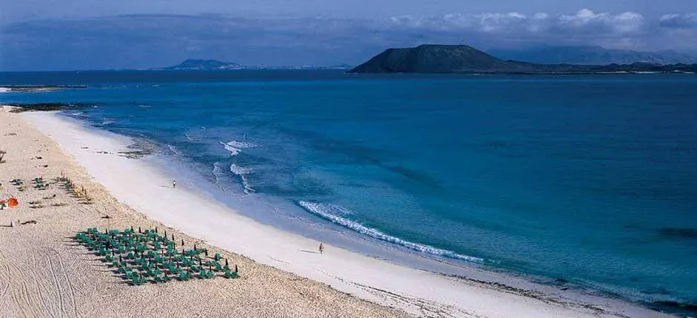
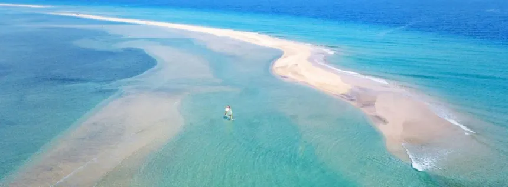
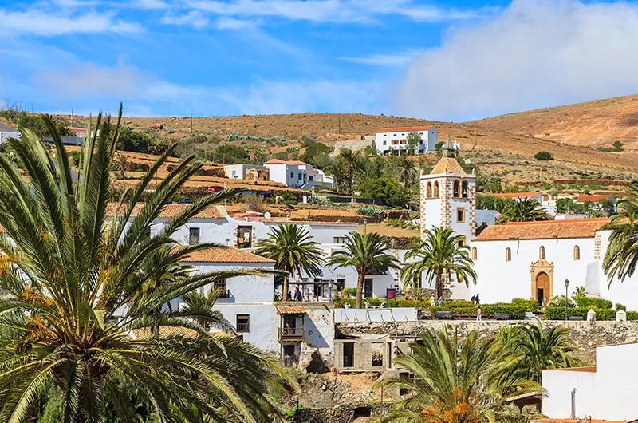
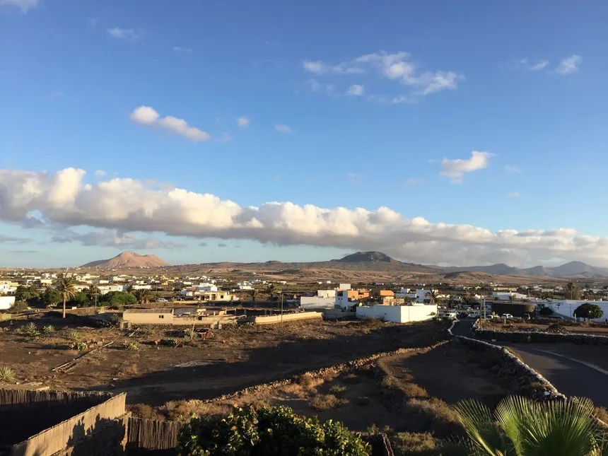
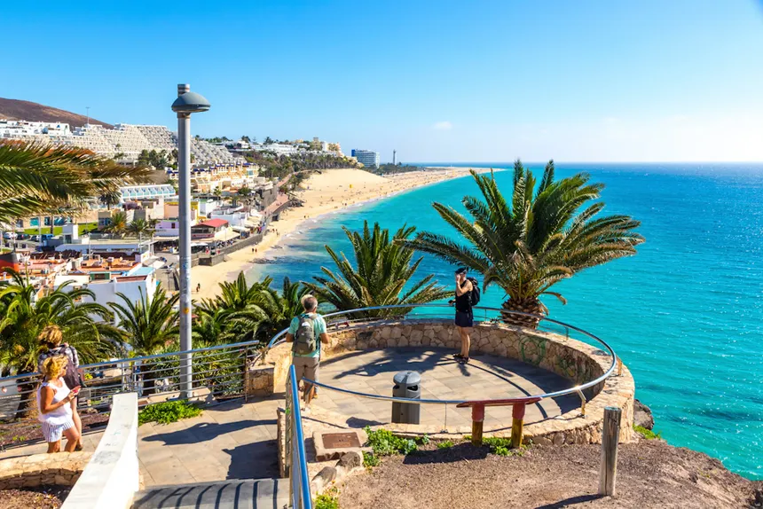
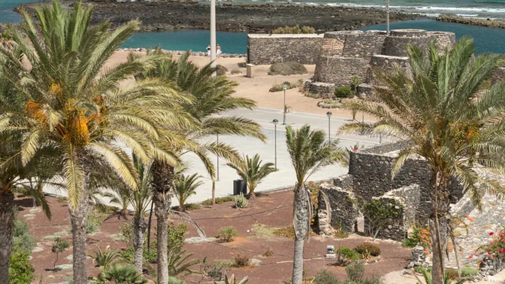
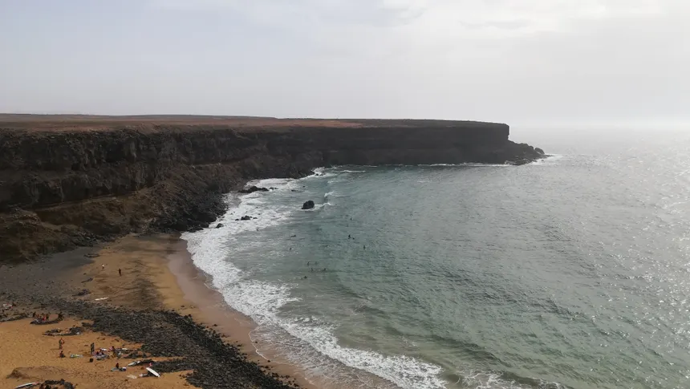
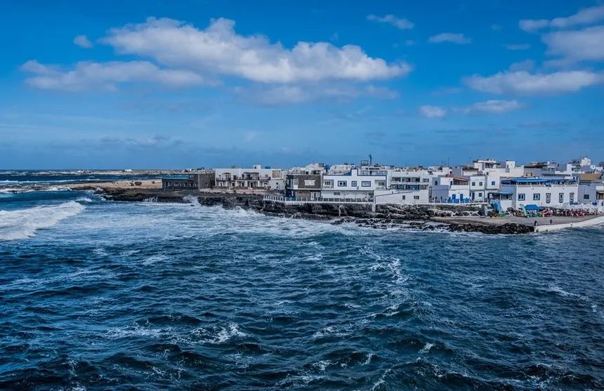

Fuerteventura
se descubre fuera.
Playas enormes, dunas, pueblos tranquilos, paisajes volcánicos y rincones donde todavía parece que el tiempo va a otro ritmo.
```Una isla para perderse sin mirar el reloj.
Fuerteventura combina algunas de las playas más espectaculares de Canarias con pueblos pequeños, montañas, volcanes y paisajes que cambian completamente de una zona a otra.
Puedes pasar el día entre dunas y océano, recorrer pueblos del interior, probar productos locales o simplemente buscar un rincón tranquilo para ver cómo cae el sol.
.webp)
¿Dónde vamos?
Algunos lugares para empezar a conocer Fuerteventura.

Corralejo
Dunas, playas enormes, restaurantes y ambiente.

Sotavento
Una de las grandes playas del sur de la isla.

Betancuria
Historia, arquitectura tradicional y tranquilidad.

Lajares
Ambiente relajado, artesanía y vida local.

Morro Jable
Costa, playa y uno de los puntos más conocidos del sur.

Caleta de Fuste
Una zona turística cómoda para pasar unos días.

Esquinzo
Arena, costa abierta y tranquilidad.

El Cotillo
Pequeño pueblo costero con playas y ambiente local.
¿Qué te apetece hacer?
Muévete por la isla.
El viento y el océano hacen de Fuerteventura un lugar especialmente atractivo para las actividades acuáticas.
También se descubre alrededor de una mesa.
El queso majorero, el pescado, los productos locales y la cocina canaria forman parte de la experiencia de visitar Fuerteventura.
Empieza a descubrirla.
Playas, pueblos, naturaleza, gastronomía y planes para preparar tu próxima escapada.
```